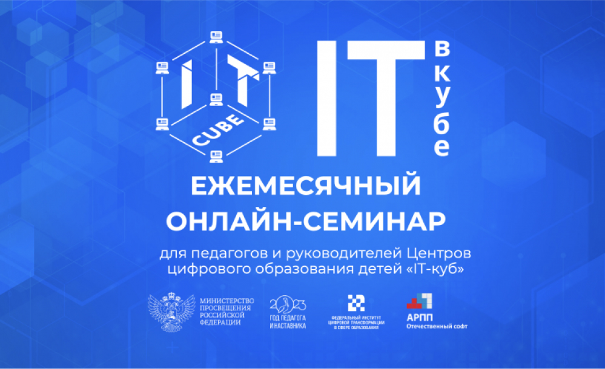

На втором онлайн-семинаре «IT в кубе» анонсировали актуальные мероприятия для педагогов и руководителей Центров «IT-куб» / взято из дизайна

Текст текст
Иииии ещё раз. На втором онлайн-семинаре «IT в кубе» анонсировали актуальные мероприятия для педагогов и руководителей Центров «IT-куб» / взято из дизайна
Текст текст
Ладно, давай в последний раз. На втором онлайн-семинаре «IT в кубе» анонсировали актуальные мероприятия для педагогов и руководителей Центров «IT-куб» / взято из дизайна